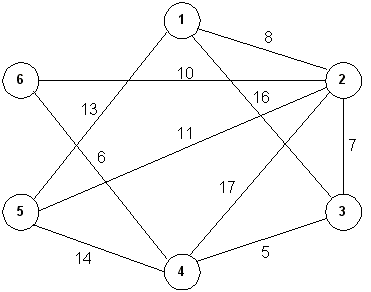
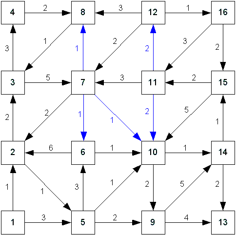

Information
std::vector<unsigned> ALGraph::SearchFrom(unsigned, TRAVERSAL_METHOD) const
{
return std::vector<unsigned>();
}
g++ driver.cpp ALGraph.cpp PRNG.cpp -o gnu -O2 -Wall -Wextra -std=c++11 -pedantic -Wconversion
If you are unable to link with Clang under Windows, provide the -c to just perform the compilation:clang++ driver.cpp ALGraph.cpp PRNG.cpp -o clan -O2 -Wall -Wextra -std=c++11 -pedantic -Wconversion
clang++ driver.cpp ALGraph.cpp PRNG.cpp -c -O2 -Wall -Wextra -std=c++11 -pedantic -Wconversion
cl driver.cpp ALGraph.cpp PRNG.cpp /Fems.exe /EHa /Za /W4 /MTd /WX /D_CRT_SECURE_NO_DEPRECATE
Information about the computer specs (maya and olga) can be found here. Some of you may remember these from my CS180 course. These are both Linux computers using GNU 64-bit g++ version 4.8.2 (with -O2). For Windows use /MT /O2 for optimizations.
For example, assume you have the graph definition in a text file named graph.txt and you want to create a PNG file called graph.png. This is the command:dot -T graphic-type -o output-file input-file
dot -T png -o graph.png graph.txt
C++ and STL Information
Using the STL will greatly simplify your tasks. However, if you've not used the STL much outside of CS170 and CS225, you may run into some problems with your coding.
This priority queue will keep things sorted from smallest to largest.// Create a PQ that uses the default std::less<> class. // std::less uses operator< so whatever you place in the PQ // must support operator< (the MyAdjInfo implements this). std::priority_queue<MyAdjInfo> edges;
Now the queue will sort in the reverse order. You can use these priority queues to help implement the algorithms.// Create a comparison functor to override the default behavior. // We can use std::greater to get the correct behavior. MyAdjInfo // also must implement operator> for this. std::greater<MyAdjInfo> cmp; // Create a PQ using the functor above. Since you are providing a value for // the 3rd template parameter, you must provide all three parameters. // (Remember, default parameters in C++ must be defaulted right-to-left.) // You must also pass the comparison functor to the constructor. std::priority_queue<MyAdjInfo, std::vector<MyAdjInfo>, std::greater<MyAdjInfo> > edges( cmp );
// This "fixes" the problem where the STL has a different method
// for removing from queues and stacks. Now, they both have the
// std::stack interface: the top() method simply calls front()
// Inheritance - Just add a top method and forward to front
template<typename T>
class My_queue : public std::queue<T>
{
public:
// this is required when calling a base class method in a templated hierarchy
T top() { return this->front(); }
};
// Aggregation - Forward all calls to the internal queue object
template<typename T>
class My_queue
{
public:
T top() { return q.front(); }
void push(T item) { q.push(item); }
bool empty() { return q.empty(); }
void pop() { q.pop(); }
private:
std::queue<T> q;
};
std::vector<unsigned> ALGraph::SearchFrom(unsigned start_node, TRAVERSAL_METHOD method) const
{
if (method == DEPTH_FIRST)
{
// Set up necessary containers and functors for depth-first searching
}
else
{
// Set up necessary containers and functors for breadth-first searching
}
// Call the templated Traverse function with the proper arguments
// Put the results from the search into the proper vector and return it
}
I use the underscore because I've discovered that some libraries have already defined INFINITY.const unsigned INFINITY_ = static_cast<unsigned>(-1);
Example Diagrams for Dijkstra's Algorithm
 |
ALGraph g(6); g.AddUEdge(1, 2, 8); g.AddUEdge(1, 3, 16); g.AddUEdge(1, 5, 13); g.AddUEdge(2, 3, 7); g.AddUEdge(2, 4, 17); g.AddUEdge(2, 5, 11); g.AddUEdge(2, 6, 10); g.AddUEdge(3, 4, 5); g.AddUEdge(4, 5, 14); g.AddUEdge(4, 6, 6); |
Adjacency list: ------------------------------- ID: [ 1] -- 8 --> [ 2] -- 13 --> [ 5] -- 16 --> [ 3] ID: [ 2] -- 7 --> [ 3] -- 8 --> [ 1] -- 10 --> [ 6] -- 11 --> [ 5] -- 17 --> [ 4] ID: [ 3] -- 5 --> [ 4] -- 7 --> [ 2] -- 16 --> [ 1] ID: [ 4] -- 5 --> [ 3] -- 6 --> [ 6] -- 14 --> [ 5] -- 17 --> [ 2] ID: [ 5] -- 11 --> [ 2] -- 13 --> [ 1] -- 14 --> [ 4] ID: [ 6] -- 6 --> [ 4] -- 10 --> [ 2] Cost to reach all nodes from node 1: ------------------------------------ Node: 1: Cost: 0 Path: 1 Node: 2: Cost: 8 Path: 1 2 Node: 3: Cost: 15 Path: 1 2 3 Node: 4: Cost: 20 Path: 1 2 3 4 Node: 5: Cost: 13 Path: 1 5 Node: 6: Cost: 18 Path: 1 2 6
Pay attention to the order of the edges in the adjacency list when there are multiple edges with the same weight.
 |
ALGraph g(16); g.AddDEdge(1, 2, 1); g.AddDEdge(1, 5, 3); g.AddDEdge(2, 3, 2); g.AddDEdge(2, 5, 1); g.AddDEdge(3, 4, 3); g.AddDEdge(3, 7, 5); g.AddDEdge(4, 8, 2); g.AddDEdge(5, 6, 3); g.AddDEdge(5, 9, 2); g.AddDEdge(5, 10, 1); g.AddDEdge(6, 2, 6); g.AddDEdge(6, 10, 1); g.AddDEdge(7, 2, 2); g.AddDEdge(7, 8, 1); g.AddDEdge(7, 6, 1); g.AddDEdge(7, 10, 1); g.AddDEdge(8, 3, 1); g.AddDEdge(9, 13, 4); g.AddDEdge(9, 14, 5); g.AddDEdge(10, 9, 2); g.AddDEdge(10, 14, 1); g.AddDEdge(11, 7, 3); g.AddDEdge(11, 10, 2); g.AddDEdge(11, 12, 2); g.AddDEdge(12, 7, 2); g.AddDEdge(12, 8, 3); g.AddDEdge(12, 16, 1); g.AddDEdge(14, 13, 2); g.AddDEdge(14, 15, 1); g.AddDEdge(15, 10, 5); g.AddDEdge(15, 11, 2); g.AddDEdge(16, 11, 3); g.AddDEdge(16, 15, 2); |
Adjacency list: ------------------------------- ID: [ 1] -- 1 --> [ 2] -- 3 --> [ 5] ID: [ 2] -- 1 --> [ 5] -- 2 --> [ 3] ID: [ 3] -- 3 --> [ 4] -- 5 --> [ 7] ID: [ 4] -- 2 --> [ 8] ID: [ 5] -- 1 --> [10] -- 2 --> [ 9] -- 3 --> [ 6] ID: [ 6] -- 1 --> [10] -- 6 --> [ 2] ID: [ 7] -- 1 --> [ 6] -- 1 --> [ 8] -- 1 --> [10] -- 2 --> [ 2] ID: [ 8] -- 1 --> [ 3] ID: [ 9] -- 4 --> [13] -- 5 --> [14] ID: [10] -- 1 --> [14] -- 2 --> [ 9] ID: [11] -- 2 --> [10] -- 2 --> [12] -- 3 --> [ 7] ID: [12] -- 1 --> [16] -- 2 --> [ 7] -- 3 --> [ 8] ID: [13] ID: [14] -- 1 --> [15] -- 2 --> [13] ID: [15] -- 2 --> [11] -- 5 --> [10] ID: [16] -- 2 --> [15] -- 3 --> [11] Cost to reach all nodes from node 1: ------------------------------------ Node: 1: Cost: 0 Path: 1 Node: 2: Cost: 1 Path: 1 2 Node: 3: Cost: 3 Path: 1 2 3 Node: 4: Cost: 6 Path: 1 2 3 4 Node: 5: Cost: 2 Path: 1 2 5 Node: 6: Cost: 5 Path: 1 2 5 6 Node: 7: Cost: 8 Path: 1 2 3 7 Node: 8: Cost: 8 Path: 1 2 3 4 8 Node: 9: Cost: 4 Path: 1 2 5 9 Node: 10: Cost: 3 Path: 1 2 5 10 Node: 11: Cost: 7 Path: 1 2 5 10 14 15 11 Node: 12: Cost: 9 Path: 1 2 5 10 14 15 11 12 Node: 13: Cost: 6 Path: 1 2 5 10 14 13 Node: 14: Cost: 4 Path: 1 2 5 10 14 Node: 15: Cost: 5 Path: 1 2 5 10 14 15 Node: 16: Cost: 10 Path: 1 2 5 10 14 15 11 12 16
{kind=link}
{kind=link}
{kind=link}
{kind=link}
{kind=link}
{kind=link}
{kind=link}
{kind=link}
{kind=link}
{kind=link}
{kind=link}